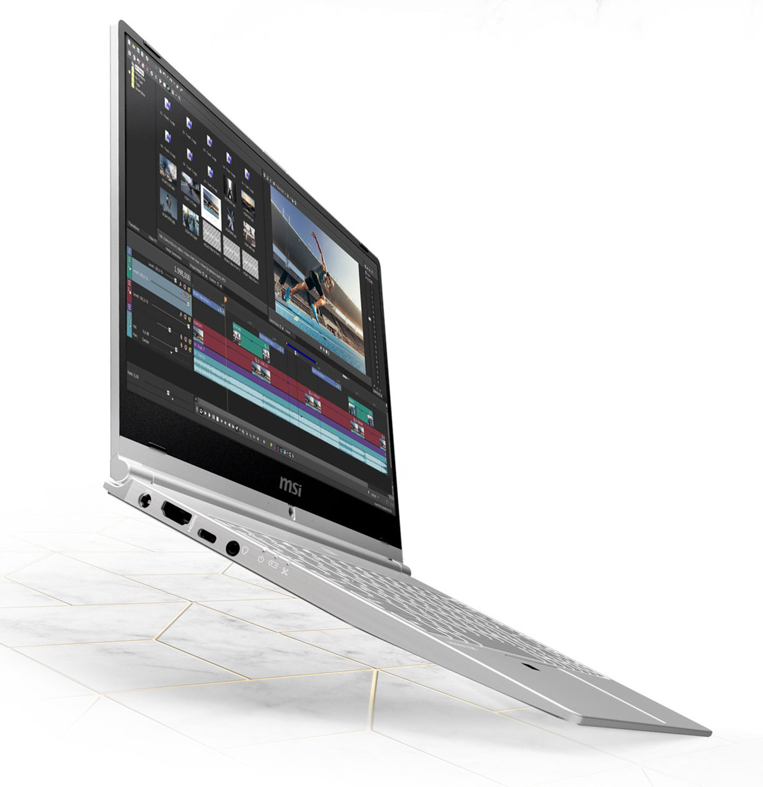

MSI Prestige 42
Technical Specs
Processor : 8th Gen Intel (i5, i7)/ 10th Gen Intel(i5, i7)
Screen Size : 16 inch Retina
True Tone : Yes
Storage : 256GB/ 512GB/ 1TB/ 2TB/ 4TB
Graphics : Intel Iris Plus
RAM : 8GB/ 16GB/ 32GB
Keyboard : Magic Keyboard with backlight
Ports : 2/ 4 Thunderbolt 3
Review
Apple refreshed their Macbook Air on April 5, 2020. The latest refresh brings in some new changes in the technical specifications. The changes are in processor and graphics department. Even though the base models come with the 8th Generation processor, they have better graphics. There has been an inclusion of 10th Gen processors in the higher-end model which starts at $1799. The base storage in all models have been doubled to 256GB from the previous 128GB. Even though there were speculations about a new 14 inch Macbook Pro similar to the design of Macbook Pro 16 inch, this new refresh sure does improves on many bits. Gone is the butterfly keyboard, the newer model comes with the new Magic Keyboard which is based on scissor mechanism, which is more reliable. All in all, this refresh may see an increase in demand for this model, as for the same price of last year's base model, you get double the storage, better graphics and a better keyboard.
Amazon Link: View